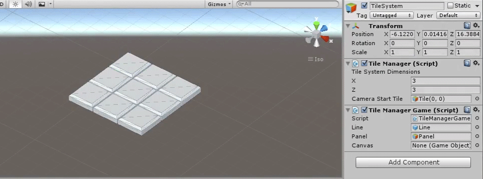
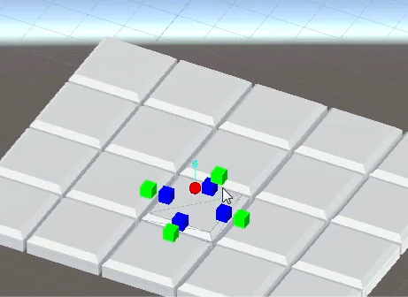
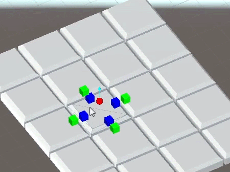
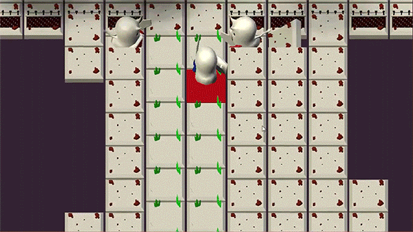

A tile system created with strategy RPGs like Fire Emblem in mind.
This is a unity editor tool to create a variety of levels that could be used in a strategy RPG. The tile editor supports changing height, slope, and connections to other tiles through visual handles.


When all those features were implemented, I went on to implement terrain types and placing objects and enemies on tiles. Then I implemented some pathfinding, which is used to highlight tiles showing movable spaces and which enemies on in range. Finally, I put together a little system allowing the character to move and attack an enemy.
